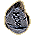
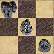

ThudBoard souhrn | o aplikaci ThudBoard | návod k ThudBoard | download
ThudBoard - The Discworld Boardgame Board
Hrací deska pro Zeměplošskou deskovou hru
Základní informace
 ThudBoard je počítačová aplikace[1] určená k hraní hry Thud[2] bez existující hrací desky a figurek.
Jestliže nemáš ponětí, co to hra Thud je, mrkni na oficiální stránky http://www.thudgame.comEN. Jestliže nezvládáš angličtinu, několik základních informací najdeš na stránce o aplikaci ThudBoard.
Účel aplikace spočívá v online hraní pomocí zasílání souřadnic tahů (na fóru, emailem, po ICQ, či jiným komunikačním programem). Pomocí této aplikace můžeš hrát takovou hru bez nutnosti rozkládání figurek po opravdové hrací desce. Hru můžeš kdykoli uložit: buď jako sérii tahů, nebo jen rozložení figur.
Další výhodou je, že můžeš hry načítat jak se ti zrovna hodí a rozehranou hru kdykoli dohrát, takže si nemusíš lámat hlavu s tím, jak byly rozloženy figurky v roce XXXX, když jste hráli se svou vzdálenou sestřenicí.
Aktuální verzi vždy nalezneš na české verzi stránek ThudBoard popřípadě anglicky na ThudBoard siteEN.
Novou holandskou verzi najdeš na Dutch ThudBoard siteNL.
[1] ThudBoard pracuje na Windowsech, Linuxech, FreeBSD, OpenBSD a
Mac OS-X, ačkoli poslední potřebuje trochu pokročilejší instalaci.
[2] česky Buch; raději ale zachovávám původní název, kvůli autentičnosti
Screenshot

(klikni pro zobrazení celého náhledu)
{kind=link}